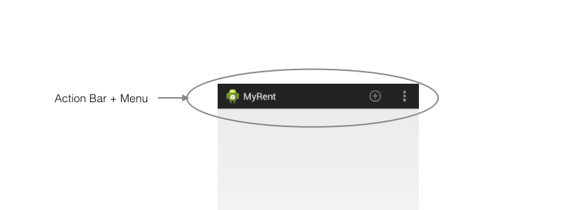
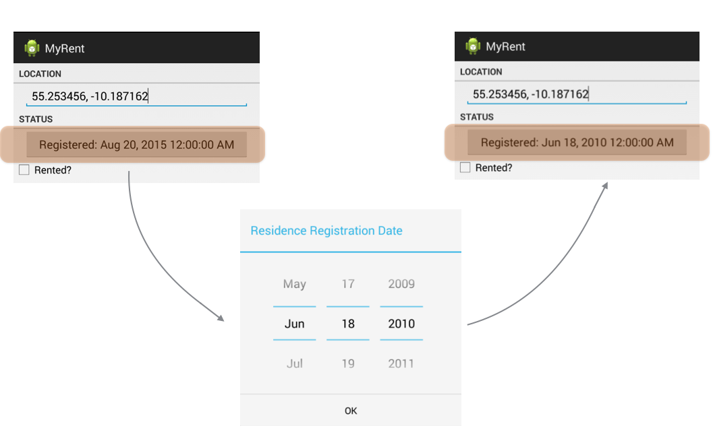
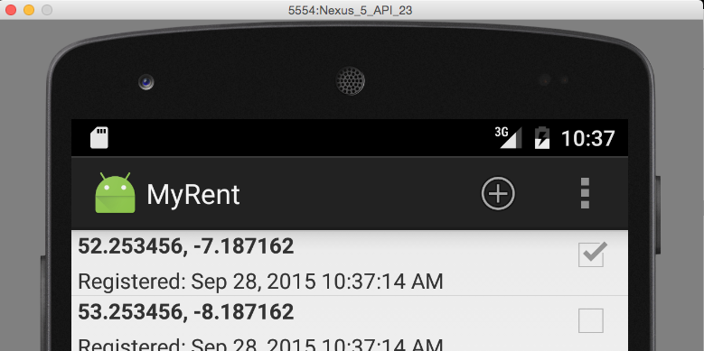
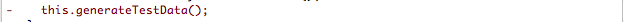
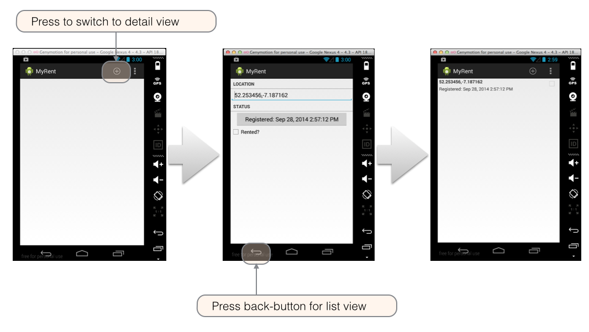

Action Bar & Dialogs
In a significant update to the app, we introduce navigation within the app using an Action Bar. This will allow us to create new residences, or navigate to existing ones. Additionally, we will explore a simple date picker dialog to allow the user to select a registration date for the residence.
Overview
At the end of this session the following features will have been added:
-
The action bar with menus as shown in Figure 1 
-
Date picker as shown in Figure 2 
Resources
Continue building the MyRent app that you commenced in the previous lab.
For reference, we are providing a version here, MyRent-02:
git clone https://github.com/wit-computing/myrent-02.git
We perform some surgery as follows on the incoming code base to allow the menus we are about to introduce to render correctly.
- Replace ResidenceActivity extends Activity, changing the base class AppCompatActivity
public class ResidenceActivity extends Activity implements TextWatcher, CompoundButton.OnCheckedChangeListener
Remove the AppCompatActivity import and replace with:
import android.app.Activity;
Make some changes to build.gradle:
- Target API 19
- Remove the appcompat dependency.
The refactored build.gradle is provided at the foot of the page.
In res/menu/myrent.xml replace tools:context=".MyRentActivity" with:
tools:context=".ResidenceActivity"
This to match the activity name change we introduced earlier.
We are now ready to proceed to intruduce a new menu.
- Add these string resources to res/values/strings.xml
<string name="new_residence">New Residence</string>
<string name="settings">Settings</string>
In the folder res/menu create a new file residencelist.xml.
Here is the file content:
Filename: residencelist.xml
<menu xmlns:android="http://schemas.android.com/apk/res/android"
xmlns:tools="http://schemas.android.com/tools"
tools:context="org.wit.myrent.ResidenceActivity" >
<item android:id="@+id/menu_item_new_residence"
android:icon="@android:drawable/ic_menu_add"
android:title="@string/new_residence"
android:showAsAction="ifRoom|withText"/>
<item
android:id="@+id/action_settings"
android:orderInCategory="100"
android:showAsAction="never"
android:title="@string/settings"/>
</menu>
Next, we bind this newly-created menu to the activity within which we wish the menu to appear, namely ResidenceListActivity.
- Add this override to ResidenceListActivity:
@Override
public boolean onCreateOptionsMenu(Menu menu)
{
MenuInflater menuInflater = getMenuInflater();
menuInflater.inflate(R.menu.residencelist, menu);
return true;
}
These imports are required:
import android.view.Menu;
import android.view.MenuInflater;
Observe in the above method, onCreateOptionsMenu, how the residencelist menu is accessed.
Figure 1 shows the relationship between the xml and display.

Build and run the application. You should see something like that shown in Figure 2.
 Refactored build.gradle
apply plugin: 'com.android.application'
android {
compileSdkVersion 23
buildToolsVersion "23"
defaultConfig {
applicationId "org.wit.myrent"
minSdkVersion 16
targetSdkVersion 19
versionCode 1
versionName "1.0"
}
buildTypes {
release {
minifyEnabled false
proguardFiles getDefaultProguardFile('proguard-android.txt'), 'proguard-rules.pro'
}
}
}
dependencies {
compile fileTree(dir: 'libs', include: ['*.jar'])
}
Helpers
Add a new class named IntentHelper to org.wit.android.helpers.
Filename: IntentHelper.java
package org.wit.android.helpers;
import java.io.Serializable;
import android.app.Activity;
import android.content.Intent;
public class IntentHelper
{
public static void startActivity (Activity parent, Class classname)
{
Intent intent = new Intent(parent, classname);
parent.startActivity(intent);
}
public static void startActivityWithData (Activity parent, Class classname, String extraID, Serializable extraData)
{
Intent intent = new Intent(parent, classname);
intent.putExtra(extraID, extraData);
parent.startActivity(intent);
}
public static void startActivityWithDataForResult (Activity parent, Class classname, String extraID, Serializable extraData, int idForResult)
{
Intent intent = new Intent(parent, classname);
intent.putExtra(extraID, extraData);
parent.startActivityForResult(intent, idForResult);
}
}
Activities (ResidenceListActivity)
Here we shall provide the coding to respond to menu selection:
Import the helpers provided in the previous step:
import static org.wit.android.helpers.IntentHelper.startActivityWithData;
import static org.wit.android.helpers.IntentHelper.startActivityWithDataForResult;
This import statement is necessary:
import android.view.MenuItem;
Now override onOptionsItemSelected to respond to selecting the menu item to create a new residence instance:
@Override
public boolean onOptionsItemSelected(MenuItem item)
{
switch (item.getItemId())
{
case R.id.menu_item_new_residence: Residence residence = new Residence();
portfolio.addResidence(residence);
startActivityWithDataForResult(this, ResidenceActivity.class, "RESIDENCE_ID", residence.id, 0);
return true;
default: return super.onOptionsItemSelected(item);
}
}
Add this line of code to onItemClick
startActivityWithData(this, ResidenceActivity.class, "RESIDENCE_ID", residence.id);
Delete remaining lines code:

Here is refactored method:
@Override
public void onItemClick(AdapterView<?> parent, View view, int position, long id)
{
Residence residence = adapter.getItem(position);
startActivityWithData(this, ResidenceActivity.class, "RESIDENCE_ID", residence.id);
}
We no longer use test data. Delete this line from Portfolio: 
Delete the now redundant method, also in Portfolio: generateTestData

One small final change to org.wit.myrent.models.Residence:
- Add a default value for geoloction in the default constructor:
geolocation = "52.253456,-7.187162";
This will ensure the the residence list will always display some meaningful data.
Here is the modified constructor:
public Residence()
{
id = UUID.randomUUID();
date = new Date();
geolocation = "52.253456,-7.187162";
}
Check that the app works as expected:
- Launch the app and select the menu item (+)
- Optionally, make some changes to the residence data in the detail view
- Switch back to the list view using the back-button.
You should be presented with something similar to that shown in Figure 1.

Dialog
The dialog in Figure 1 is an instance of DatePickerDialog which is a simple dialog containing a DatePicker.
- A DatePicker is a widget for selecting a date.

- As shown in Figure 2, the DatePicker is contained in ResidenceActivity.

Activities (ResidenceActivity)
We shall now implement the code to allow a user to set the registration date of a residence.
In org.wit.myrent.activities.ResidenceActivity add these import statements:
import java.util.Calendar;
import java.util.Date;
import java.util.GregorianCalendar;
import android.app.DatePickerDialog;
import android.view.View;
import android.view.View.OnClickListener;
Delete line disabling date button:

Change the signature of ResidenceActivity class by adding
- View.OnClickListener
- DatePickerDialog.OnDateSetListener
to the list of implemented interfaces:
public class ResidenceActivity extends Activity implements TextWatcher, OnCheckedChangeListener, View.OnClickListener, DatePickerDialog.OnDateSetListener
{
...
...
}
This change will trigger errors. Add unimplemented methods manually or using the Android Studio hot keys to autogenerate the methods (as described in detail in previous labs such as in step 9 MyRent-00):
- public void onDateSet(DatePicker view, int year, int monthOfYear, int dayOfMonth)
- public void onClick(View v)
Here is the implementation of these methods:
@Override
public void onClick(View v)
{
switch (v.getId())
{
case R.id.registration_date : Calendar c = Calendar.getInstance();
DatePickerDialog dpd = new DatePickerDialog (this, this, c.get(Calendar.YEAR), c.get(Calendar.MONTH), c.get(Calendar.DAY_OF_MONTH));
dpd.show();
break;
}
}
@Override
public void onDateSet(DatePicker view, int year, int monthOfYear, int dayOfMonth)
{
Date date = new GregorianCalendar(year, monthOfYear, dayOfMonth).getTime();
residence.date = date;
dateButton.setText(residence.getDateString());
}
Set the date button listener in onCreate:
dateButton .setOnClickListener(this);
Launch the app and test that this code works as intended:
- Create a new residence
- Change the registration date
- Return to the list view and create a further residence.
- Return to the list view, click on the first residence, which opens its detail view, and observe that it retains the modified date.
For reference, here is the completed ResidenceActivity class:
package org.wit.myrent.activities;
import android.app.Activity;
import android.os.Bundle;
import android.text.Editable;
import android.text.TextWatcher;
import android.util.Log;
import android.view.Menu;
import android.view.MenuItem;
import android.widget.Button;
import android.widget.CheckBox;
import android.widget.CompoundButton;
import android.widget.DatePicker;
import android.widget.EditText;
import org.wit.myrent.R;
import org.wit.myrent.app.MyRentApp;
import org.wit.myrent.models.Portfolio;
import org.wit.myrent.models.Residence;
import java.util.UUID;
import java.util.Calendar;
import java.util.Date;
import java.util.GregorianCalendar;
import android.app.DatePickerDialog;
import android.view.View;
import android.view.View.OnClickListener;
import android.widget.RadioGroup;
public class ResidenceActivity extends Activity implements
TextWatcher,
CompoundButton.OnCheckedChangeListener,
View.OnClickListener,
DatePickerDialog.OnDateSetListener
{
private EditText geolocation;
private Residence residence;
private CheckBox rented;
private Button dateButton;
private Portfolio portfolio;
@Override
protected void onCreate(Bundle savedInstanceState)
{
super.onCreate(savedInstanceState);
setContentView(R.layout.activity_residence);
geolocation = (EditText) findViewById(R.id.geolocation);
residence = new Residence();
// Register a TextWatcher in the EditText geolocation object
geolocation.addTextChangedListener(this);
dateButton = (Button) findViewById(R.id.registration_date);
rented = (CheckBox) findViewById(R.id.isrented);
MyRentApp app = (MyRentApp) getApplication();
portfolio = app.portfolio;
UUID resId = (UUID) getIntent().getExtras().getSerializable("RESIDENCE_ID");
residence = portfolio.getResidence(resId);
if (residence != null)
{
updateControls(residence);
}
}
public void updateControls(Residence residence)
{
geolocation.setText(residence.geolocation);
rented.setChecked(residence.rented);
dateButton.setText(residence.getDateString());
dateButton.setOnClickListener(this);
}
@Override
public boolean onCreateOptionsMenu(Menu menu)
{
// Inflate the menu; this adds items to the action bar if it is present.
getMenuInflater().inflate(R.menu.myrent, menu);
return true;
}
@Override
public boolean onOptionsItemSelected(MenuItem item)
{
// Handle action bar item clicks here. The action bar will
// automatically handle clicks on the Home/Up button, so long
// as you specify a parent activity in AndroidManifest.xml.
int id = item.getItemId();
//noinspection SimplifiableIfStatement
if (id == R.id.action_settings)
{
return true;
}
return super.onOptionsItemSelected(item);
}
@Override
public void beforeTextChanged(CharSequence charSequence, int i, int i1, int i2)
{
}
@Override
public void onTextChanged(CharSequence charSequence, int i, int i1, int i2)
{
}
@Override
public void afterTextChanged(Editable editable)
{
residence.setGeolocation(editable.toString());
}
@Override
public void onCheckedChanged(CompoundButton compoundButton, boolean isChecked)
{
Log.i(this.getClass().getSimpleName(), "rented Checked");
residence.rented = isChecked;
}
@Override
public void onClick(View v)
{
switch (v.getId())
{
case R.id.registration_date:
Calendar c = Calendar.getInstance();
DatePickerDialog dpd = new DatePickerDialog(this, this, c.get(Calendar.YEAR), c.get(Calendar.MONTH), c.get(Calendar.DAY_OF_MONTH));
dpd.show();
break;
}
}
@Override
public void onDateSet(DatePicker view, int year, int monthOfYear, int dayOfMonth)
{
Date date = new GregorianCalendar(year, monthOfYear, dayOfMonth).getTime();
residence.date = date;
dateButton.setText(residence.getDateString());
}
}